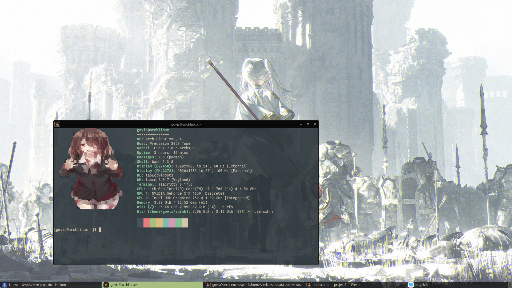

Cíl kapitoly: Definovat software, jeho historický kontext a místo v moderním ekosystému operačních systémů rodiny Linux.
Ve světě unixových operačních systémů probíhá v posledních letech masivní technologická transformace. Více než tři dekády starý a těžkopádný X Window System (X11) je postupně nahrazován moderním, bezpečnějším a efektivnějším protokolem Wayland. V rámci tohoto přechodu vzniká potřeba nových správců oken (Window Managers), které by uživatelům nabídly to, na co byli zvyklí u starých systémů, avšak s využitím nových technologií.
Labwc je okenní manažer pro Wayland, který se hlásí k odkazu legendárního správce oken Openbox z éry X11. Jeho primárním cílem je implementovat stacking (vrstvené a plovoucí) řazení oken. Nejedná se tedy o dlaždicové (tiling) prostředí, ale o tradiční způsob práce, kdy okna mohou ležet přes sebe, dají se libovolně přesouvat myší a měnit jejich velikost.
Vývojový tým Labwc se zaměřuje na striktní dodržování specifikací Wayland protokolů. Odmítají do jádra kompozitoru přidávat zbytečné funkce, které by jej zpomalovaly. Místo toho razí klasickou UNIXovou filozofii: "Udělej jednu věc a udělej ji pořádně." Labwc se stará pouze o okna a vstup – vše ostatní (panely, tapety) je řešeno externími programy.
